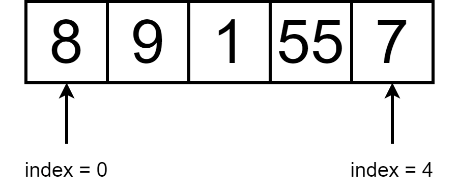

class: center, middle # Programmation procédurale : # les tableaux <img height="200px" src="img/logo.png"> --- name: sommaire ## On parle de quoi ? 1. <a href="#quest">Qu'est ce qu'un tableau ?</a> 2. <a href="#declaration">Déclaration</a> 3. <a href="#initialisation">Initialisation</a> 4. <a href="#lecture">Lecture / Impression</a> 5. <a href="#define">Tableaux et constantes symboliques</a> → Les **chaînes de caractères** sont des tableaux de `char` : elles font l'objet du module **03**. --- name: quest ## Qu'est-ce qu'un tableau ? Un tableau est un **ensemble d'éléments successifs** en mémoire centrale accessibles via un **index**. <p></p> --- name: declaration ## Déclaration Un tableau est caractérisé par : * une taille maximale (définie à l'avance) * un nom * un type ```c void main (void){ int monTableau[5]; } ``` --- ## Déclaration ```c void main (void){ int monTableau[5]; monTableau[1] = 8; monTableau[4] = 4; } ``` --- ## Déclaration Une fois qu'un tableau a été déclaré, **sa taille ne peut plus changer**. ```c void main (void){ int monTableau[] = {17, 8, 2, 2, 4}; monTableau[5] = 10; // erreur ! } ``` → `sizeof` donne la taille du tableau (le nombre d'octets réservés en mémoire) ```c void main (void){ int monTableau[10]; monTableau[5] = 10; int nbOctets = sizeof(monTableau); int taille = nbOctets / sizeof(int); } ``` --- name: initialisation ## Initialisation L'initialisation d'un tableau peut se faire : * directement avec la déclaration ```c void main (void){ int monTableau[] = {0, 0, 0, 0, 0}; } ``` → <span style="color:red;">l'ordinateur réserve automatiquement le nombre d'octets nécessaire</span> * avec une répétitive ```c void main void(){ int monTableau[5]; for(int i = 0; i < 5; i++) monTableau[i] = 0; } ``` → <span style="color:red;">la taille doit être spécifiée explicitement</span> → <span style="color:red;">il n'existe pas de valeur par défaut !</span> --- name: lecture ## Lecture ```c void main (void){ int monTableau[5]; for(int i = 0; i < 5; i++){ printf("Entrez le nombre %d :\n", i + 1); scanf("%d", &monTableau[i]); } } ``` --- ## Impression ```c void main (void){ int monTableau[5]; // le tableau se remplit... int taille = sizeof(monTableau) / sizeof(int); for(int i = 0; i < taille; i++){ printf("Nombre %d : %d\n", i + 1, monTableau[i]); } } ``` --- name: define ## Tableaux et constantes symboliques Une **constante symbolique** permet de **remplacer**, dans le code, **des constantes par un texte significatif**. La déclaration d'une constante symbolique se place toujours : * au début du code source (fichier avec l'extension `.c`) ou * dans un fichier d'en-tête ("header file", un fichier avec l'extension `.h`). Le syntaxe est : ```c #define MA_CONSTANTE valeur ``` Exemple : ```c #define NB_ELEVES 24 #define NB_COURS 10 void main (void){ int pointsFrancais[NB_ELEVES]; int pointsMaths[NB_ELEVES]; int codeCours[NB_COURS]; } ``` → Déjà rencontrées au module **03** pour dimensionner les chaînes : la raison est la même, la taille d'un tableau doit être connue **avant** l'exécution. --- ## Un exemple final ```c #include <stdio.h> #define NB_NOTES 5 void main(void) { int notes[NB_NOTES]; int total = 0; int max = 0; for (int i = 0; i < NB_NOTES; i++) { printf("Note %d : ", i + 1); scanf("%d", ¬es[i]); total = total + notes[i]; if (notes[i] > max) max = notes[i]; } printf("Moyenne : %.2f\n", (float) total / NB_NOTES); printf("Meilleure note : %d\n", max); } ``` → `(float)` **avant** la division : sans lui, `total / NB_NOTES` serait une division entière.